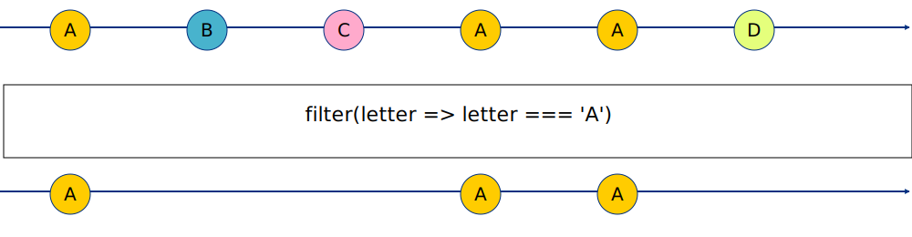
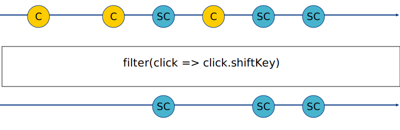
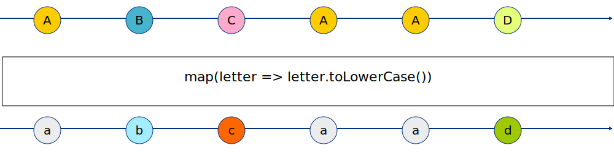
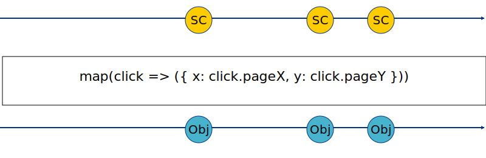
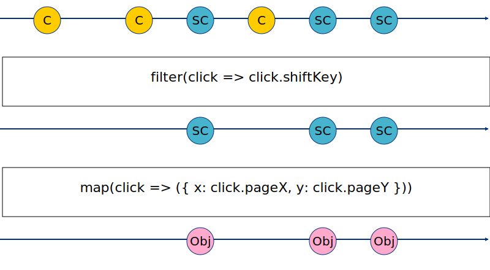

class: center, middle # RXJS, Reactive programming and Observables --- ## Summary .breadcrumbs[<a href="#1">RXJS, Reactive programming and Observables</a>] Learn the power of reactive programming using Observables to work with asynchronous code, among other use. This material is part of the [mobile development course](https://github.com/MediaComem/comem-devmobil) for [Media Engineering](https://heig-vd.ch/formations/bachelor/filieres/ingenierie-des-medias). **Recommended reading** - [JavaScript](../js/) - [JavaScript Closures](../js-closures/) - [JavaScript Promises](../js-promises/) --- ## Setup .breadcrumbs[<a href="#1">RXJS, Reactive programming and Observables</a>] To follow along the examples of this subject, here is what you need to do: 1. Create a new directory somewhere in your filesystem. Let's call it `rxjs` 1. Create those files in this new `rxjs` directory: - An `index.html` file with [minimal markup][htmlshell], - A blank `script.js` 3. Include the **RxJS library** and the `script.js` file in `index.html` before the `</body>` tag: ```html <body> * <script src="https://unpkg.com/rxjs@^7/dist/bundles/rxjs.umd.min.js"></script> * <script src="./script.js"></script> </body> ``` > Note that we did not install RxJS using `npm` here, as that would require a lot more setup and configuration > and that is not the purpose of this subject. --- ## What (the hell) is... .breadcrumbs[<a href="#1">RXJS, Reactive programming and Observables</a>] <h4>... an observable?</h4> An observable is an **asynchronous data stream**, meaning that it emits **multiple events over time**. For example, a user's **mouse clicks** on a website could easily be modeled as an observable: there will be several of them and they will happen at different times in the future. <h4>... reactive programming</h4> Basically, **reactive programming** is programming with **asynchronous** data **streams** by reacting to their events. <h4>... RxJS</h4> **RxJS** stands for [**R**eactive**X**][rx] for **J**ava**S**cript, and is a JS library that provides an amazing toolbox of functions to **create, combine and filter** observables. --- ## Observing Observables .breadcrumbs[<a href="#1">RXJS, Reactive programming and Observables</a>] As said previously, an Observable is a stream of data. It can: - **Emit different values** over time - **Emit an error** event and stop - **Complete** gracefully and stop Many documentation explaining Observables and reactive programming do so by using **marble diagrams** to represent them graphically. Here's one that resumes the three properties above (using a "click" stream example): <p class="center shadow"><img src="images/reactive-programming.png"></p> --- ## Simple illustration .breadcrumbs[<a href="#1">RXJS, Reactive programming and Observables</a>] Suppose you want to react to clicks on a particular button in your page: ```html <body> <button id="myButton">Button</button> <!-- Scripts --> </body> ``` This could be achieved in pure JavaScript by adding an `EventListener` to the `click` event of the button and providing a callback: ```js document .getElementById("myButton") .addEventListener( "click", () => alert("Button has been clicked") ); ``` --- ### Work with Observables .breadcrumbs[<a href="#1">RXJS, Reactive programming and Observables</a> > <a href="#6">Simple illustration</a>] Let's convert this to reactive programming. Remove any previous code in `script.js` and add: ```js const { fromEvent } = rxjs; // `1` fromEvent(document.getElementById("myButton"), "click") // `2` .subscribe(() => alert("Button has been clicked")); // `3` ``` **`1`** - The **RxJS** library is available through the `rxjs` global variable. We used some [destructuring assignment][destructuring] to only get the `fromEvent(...)` function. > In a properly configured application, you would have accessed this function by `import`ing from the `rxjs` module **`2`** - [`fromEvent(...)`][from-event] creates an `Observable` that will emit **each particular event** occuring on **a particular DOM element**. Here, those are `click` events on the `#myButton` element. **`3`** - `Observable`s _usually_ won't **emit** any values until an **Observer subscribes to them** by calling their `subscribe(...)` method, passing it a callback which will be called by the `Observable` for each value it emits. > Go on and click the button, now. --- ### Complicate all the things .breadcrumbs[<a href="#1">RXJS, Reactive programming and Observables</a> > <a href="#6">Simple illustration</a>] Suppose now, for the sake of the argument, that we want to react to the button being clicked only if the user also **pressed the `Shift` key** while clicking, in which case we display in an alert **the coordinates of the mouse**. Without using **RxJS** and `Observables`, we could write something like this: ```js document.getElementById("myButton").addEventListener("click", (event) => { // Check if the event has been fired while the Shift key was pressed * if (event.shiftKey) { // Extract the mouse coordinates from the MouseEvent object * const coordinates = { * x: event.pageX, * y: event.pageY * }; // Display the coordinates in an alert string * alert(\`Clicked at [${coordinates.x}, ${coordinates.y}]`); * } }); ``` At first glance, nothing prevents us to write **the exact same code** in an `Observable`'s `subscribe` callback and go on our merry way. > That would work, but **RxJS** allows you to be more structured.. --- #### The RxJs way! .breadcrumbs[<a href="#1">RXJS, Reactive programming and Observables</a> > <a href="#6">Simple illustration</a> > <a href="#8">Complicate all the things</a>] Here is how you would write this feature, following the **RxJS** philosophy: ```js const { fromEvent } = rxjs; const { filter, map } = rxjs.operators; fromEvent(document.getElementById("myButton"), "click") .pipe( filter((click) => click.shiftKey), map((event) => ({ x: event.pageX, y: event.pageY })) ) .subscribe((coordinates) => alert(\`Clicked at [${coordinates.x}, ${coordinates.y}]`) ); ``` Hum. Okay. That's **a lot of new code**. Let's dive into it before discussing what advantages this implementation offers over the previous one. > So... what is this `pipe(...)` method anyway ? --- ## Introducing... Piping! .breadcrumbs[<a href="#1">RXJS, Reactive programming and Observables</a>] One of the key feature of the **RxJS** library is the ability to **modify, alter, filter, and otherwise transform streams** into other streams. This is similar to the `|` (pipe) operator in the command line, which allows you to pass the result of a command as input to another command: ```shell $> `ls` -la . | `grep` txt ``` > Here, the result of the `ls` command is used as the input for the `grep` command Conveniently, every `Observable` has a method named `pipe(...)`, that can be used to apply a **sequence of operations** on its emitted values. An operation is nothing more than a function, called `Operator`, that takes an `Observable` as input, does something with its emitted values, and outputs the results in a _new_ `Observable`. > This output `Observable` will be used as input for the next `Operator` in the sequence, or be subscribed to if it's the last one. --- ### Plumbing 101 .breadcrumbs[<a href="#1">RXJS, Reactive programming and Observables</a> > <a href="#10">Introducing... Piping!</a>] In our example code, we used a sequence of `Operator`s and applied it on the `Observable` produced by `fromEvent`, using the `pipe(...)` method: ```js fromEvent(document.getElementById("myButton"), "click") // Call the pipe method on our initial Observable * .pipe( // Apply the filter operator `filter`(/* ... */), // Then apply the map operator `map`(/* ... */) * ) // Subscribe to get the final result .subscribe(/* ... */); ``` > In this case, the `subscribe(...)` method is called on the `Observable` returned by the `map` operator, not the `fromEvent` function. It's now time to see what the `filter` and `map` operators do... --- ### `filter` operator .breadcrumbs[<a href="#1">RXJS, Reactive programming and Observables</a> > <a href="#10">Introducing... Piping!</a>] For each value emitted by the source `Observable`, this operator checks wether it respects a user-defined condition. The `Observable` returned by `filter` will only emit the values that pass the check. Here's a marble representation of this operator: <p class="shadow center"></p> And how you would use it: ```js randomLetters() // Emits random letters .pipe(`filter(letter => letter === 'A')`) // Emits only letters "A" .subscribe(letter => console.log(letter)); // "A" ``` > See [the official documentation][rxjs-filter] --- #### In context .breadcrumbs[<a href="#1">RXJS, Reactive programming and Observables</a> > <a href="#10">Introducing... Piping!</a> > <a href="#12">`filter` operator</a>] In our example, we want to filter `click` events based on wether the `Shift` key was pressed. As a marble diagram, this would look like this: > `C` stands for "Click (without `Shift` key)", `SC` for "`Shift` + Click" <p class="shadow center"></p> And in the code: ```js fromEvent(document.getElementById("myButton"), "click") .pipe(`filter(click => click.shiftKey)`) .subscribe(click => console.log('Shift key pressed!', click)) ``` --- ### `map` operator .breadcrumbs[<a href="#1">RXJS, Reactive programming and Observables</a> > <a href="#10">Introducing... Piping!</a>] The `map` operator takes each emitted value of the source Observable, apply it a user-defined function, and emits the result of this function. > This is similar to the `map(...)` method of an `Array` Here's a marble representation of this operator: <p class="shadow center"></p> And how you would use it: ```js randomLetters() // Emits randomm letters in upper case .pipe(`map(letter => letter.toLowerCase())`) // Emits those letters in lower case .subscribe(letter => console.log(letter)); // "a", "b", "c", ... ``` > See [the official documentation][rxjs-map] --- #### In context .breadcrumbs[<a href="#1">RXJS, Reactive programming and Observables</a> > <a href="#10">Introducing... Piping!</a> > <a href="#14">`map` operator</a>] In our example, for each shift-click event, we want a custom object containing only the mouse coordinates. As a marble diagram, this would look like this: <p class="shadow center"></p> And in the code: ```js // Emits only click eventy with Shift Key pressed shiftClick() // Emits click coordinates for each shift click .pipe(`map(click => ({ x: click.pageX, y: click.pageY }))`) // Prints coordinates .subscribe(coords => console.log('Received coordinates!', coords)) ``` --- ### All together now .breadcrumbs[<a href="#1">RXJS, Reactive programming and Observables</a> > <a href="#10">Introducing... Piping!</a>] In light of this new knowledge, let's take another look at the complete feature code: ```js const { fromEvent } = rxjs; // Operators are accessible through the rxjs.operators object. *const { filter, map } = rxjs.operators; fromEvent(document.getElementById("myButton"), "click") .pipe( * filter((click) => click.shiftKey), * map((event) => ({ x: event.pageX, y: event.pageY })) ) .subscribe((coordinates) => alert(\`Clicked at [${coordinates.x}, ${coordinates.y}]`) ); ``` > To `import` operators in an ES Module context, you would import them from `rxjs/operators`. --- #### Marble-ous .breadcrumbs[<a href="#1">RXJS, Reactive programming and Observables</a> > <a href="#10">Introducing... Piping!</a> > <a href="#16">All together now</a>] As a marble diagram, this would look like this: > User clicks on the button (with or without the `Shift` key) <p class="shadow center"></p> > Display coordinates in an `alert` using `Obj` --- ## What are the advantages .breadcrumbs[<a href="#1">RXJS, Reactive programming and Observables</a>] This `pipe` and `Operators` approach has several advantages: 1. The `subscribe` callback **only contains the code for the ultimate operation** we want to execute. 1. The list of operators breaks down in a readable way **which operations are applied and in which order**. 1. You can store the `Observables` produced by each `Operator` in their own variable, to enhance reusability and/or readability: ```js const `clickObs` = fromEvent(document.getElementById("myButton"), "click"); const `shiftClickObs` = `clickObs`.pipe(filter((click) => click.shiftKey)); const `coordinatesObs` = `shiftClickObs`.pipe( map((click) => ({ x: click.pageX, y: click.pageY })) ); `coordinatesObs`.subscribe( alert(\`Clicked at [${coordinates.x}, ${coordinates.y}]`) ); ``` 1. Since many `Operator`s takes a callback function as parameter, you can easily **refactor your code in small reusable functions**, that could live in their own module _(see next slide)_ --- ### Function refactor .breadcrumbs[<a href="#1">RXJS, Reactive programming and Observables</a> > <a href="#18">What are the advantages</a>] ```js const { fromEvent } = rxjs; const { filter, map } = rxjs.operators; fromEvent(document.getElementById("myButton"), "click") .pipe( filter(`isClickWithShift`), map(`extractMouseCoordinates`) ) .subscribe(`displayCoordinates`); function `isClickWithShift`(click) { return click.shiftKey; } function `extractMouseCoordinates`(event) { return { x: event.pageX, y: event.pageY }; } function `displayCoordinates`(coordinates) { alert(\`Clicked at [${coordinates.x}, ${coordinates.y}]`); } ``` --- ## Parallel Operations .breadcrumbs[<a href="#1">RXJS, Reactive programming and Observables</a>] `Operator`s that can be used in pipe sequences are called `Pipeable Operator`s. The other kind of `Operator`s are called `Creation Operator`s and are used to create `Observable`s (`fromEvent(...)` is one of them). Some of those `Operator`s are particularely useful when dealing with parallel asynchronous logic: - `rxjs.forkJoin(...)` - takes an array (or dictionnary) of `Observable`s, wait for them to complete, then emit an array (or dictionnary) of each `Observable` last emitted value. > See [official documentation][rxjs-forkjoin] - `rxjs.combineLatest(...)` - takes an array of `Observale`s and, each time one of them emits a new value, emits an array of each `Observable` latest emitted value. > See [official documentation][rxjs-combinelatest] --- ## Why would I use this... thing? .breadcrumbs[<a href="#1">RXJS, Reactive programming and Observables</a>] We already discussed the topic of using **callbacks** to handle asynchronous operations, and seen that it could rapidly [get out of hands][callback-hell] when multiple async operations are to be executed one after the other. So we learnt about **[Promises][js-prom]**, wich mitigates the pains of callbacks and allow setting up more controlled flow of actions. > But Promises have their limitations and, depending on your needs, they could not be adequates. Observables (and reactive programming) are **another tool to work with async operations**. --- ### Comparison .breadcrumbs[<a href="#1">RXJS, Reactive programming and Observables</a> > <a href="#21">Why would I use this... thing?</a>] Observables have some **similarities** with [Promises][js-prom], but here's the **key differences**: | `Promises` | `Observables` | | --- | --- | | **Always** asynchronous | **Sometimes** asynchronous | | Executes **immediately** | Executes **only when subscribe to** | | Resolve once with one value | Can emit different values periodically until completion | | - | `Operator`s ! | --- ### Convertion .breadcrumbs[<a href="#1">RXJS, Reactive programming and Observables</a> > <a href="#21">Why would I use this... thing?</a>] The RxJS library provides you with utility to convert Promise-based logic to Observable-based logic, and _vice-versa_. **Promise to Observable** Use the `from(...)` function to create an `Observable` from a `Promise`: ```js const promise = Promise.resolve("World"); `from(promise)`.subscribe((name) => console.log(\`Hello ${name}`)); ``` > The resulting `Observable` wil emit once, when the underlying `Promise` resolves, then complete. **Observable to Promise** Use the `toPromise()` method of an `Observable` to create a `Promise` out of it: ```js const promise = someObserable$.toPromise(); promise.then(/* ... */); ``` --- ## Resources .breadcrumbs[<a href="#1">RXJS, Reactive programming and Observables</a>] - [JavaScript Theory: Promise vs Observable][prom-vs-obs] - [RxJS Documentation][rxjs-doc] - [Observable Decision Tree][obs-decision] - A very useful tool to help you selet the right Operator for your use case [from-event]: https://rxjs-dev.firebaseapp.com/api/index/function/fromEvent [destructuring]: ../js/#38 [htmlshell]: http://htmlshell.com/ [callback-hell]: https://miro.medium.com/max/1400/0*bO_JSfydCKFUnJ2d.png [js-prom]: ../js-promises [obs-decision]: https://rxjs-dev.firebaseapp.com/operator-decision-tree [prom-vs-obs]: https://medium.com/javascript-everyday/javascript-theory-promise-vs-observable-d3087bc1239a [rx]: http://reactivex.io/ [rxjs-combinelatest]: https://rxjs-dev.firebaseapp.com/api/index/function/combineLatest [rxjs-doc]: https://rxjs-dev.firebaseapp.com/guide/overview [rxjs-operators]: https://rxjs-dev.firebaseapp.com/api/operators [rxjs-filter]: https://rxjs-dev.firebaseapp.com/api/operators/filter [rxjs-forkjoin]: https://rxjs-dev.firebaseapp.com/api/index/function/forkJoin [rxjs-map]: https://rxjs-dev.firebaseapp.com/api/operators/map